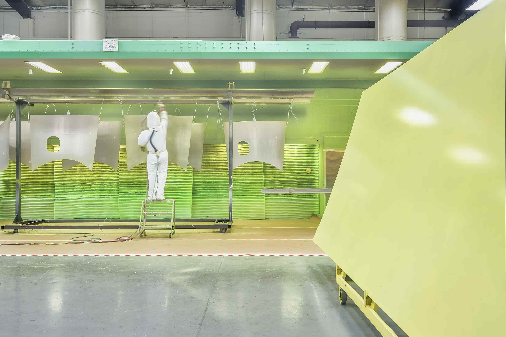

Manufacturing
Manufacturing Execution System
Elinext supported a legacy MES provider with several focused teams and long-term integration work.
Read case studyValence is scaling a high-compliance surface finishing network. The next gain may come from cleaner planning data, not another spreadsheet.
Saw the Planner signal for MRP, work orders, certification documents, and flow-down evidence. This brief shows where a small software pilot could help Quality and Engineering first.

The Planner role says Valence is adding planning capacity around customer specs, MRP records, work orders, and certification documents. That points to growth in the flow between production control and quality evidence. In aerospace finishing, the hard part is not making one more form. It is keeping revision data, approvals, and objective evidence clean across sites. Valence already sells a single-supplier, full-service model. If the data flow stays manual, Quality and Engineering carry the hidden load.
Map one customer PO from spec review to cert package. Mark each re-keyed field, revision check, and approval handoff before adding more planner work.
Start with one process family, then compare the same fields at a second site. That exposes variation without touching controlled drawings first.
Elinext would build the first working slice, then leave Valence with a clear rollout plan.
Map customer specs, purchase orders, MRP fields, work order steps, and certification evidence across one facility.
Connect MRP exports, inspection forms, and AS9102 document templates into one searchable pilot data set.
Add rules that flag missing specs, stale approvals, and mismatched revision data before parts move downstream.
Run weekly demos with Matthew's team and prepare a small rollout plan for another site.
Elinext is a full-cycle software development company, active since 1997, with about 700 in-house specialists and no freelancers. For Valence, the fit is industrial software, QA automation, data engineering, and secure delivery. We hold ISO 9001 and ISO 27001 certifications, which matters in a high-compliance aerospace setting. Our named customers include Siemens, Broadcom, Volkswagen, and TRUMPF. That background supports the pilot above: a small team, practical scope, and software that reduces quality admin.
Elinext supported a legacy MES provider with several focused teams and long-term integration work.
Read case study
The platform collects factory machine data and turns it into improvement insights for production teams.
Read case study